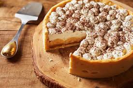

Banoffee
postado em 08 de junho de 2024 Ingredientes:200 gramas de biscoitos Maizena 100 gramas de manteiga sem sal 4 potes de Danette Sobremesa Sabor Doce de Leite 2 bananas nanicas cortadas em rodelas 250 gramas de creme de leite fresco 4 colheres de sopa de açúcar 1 colher de sopa de cacau em pó 100% puro Modo de preparo:Preaqueça o forno à 180°C.Misture a Biscoito Maizena a com a manteiga em um processador (ou liquidificador). Em uma forma de 22 cm de diâmetro espalhe a massa, apertando bem e cobrindo toda a forma e leve para assar por 10 minutos ou até ficar levemente dourada.Com a massa já fria, despeje Danette Sobremesa Sabor Doce De Leite sobre a torta e espalhe as bananas.Bata o creme de leite com a açúcar na batedeira (ou em uma tigela com a ajuda de um fouet - batedor de arame) até o ponto de chantili.Espalhe o chantili pela torta e leve a geladeira até a hora de servir.Polvilhe o cacau em pó antes de servir.
Leia mais